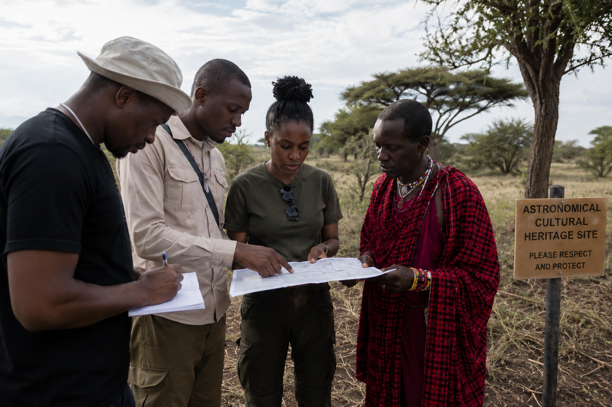

Tanzanian Astronomical Heritage
An open-source digital space mapping historical star navigation records, archeological solar monoliths, and indigenous starlore collections across Tanzania.
Geospatial Mapping
A raw spatial data index anchoring ancient Tanzanian star navigation networks, sacred landmarks, and solar alignments to absolute, verified coordinates.
It registers historical coordinates across premier cultural nodes, including the 16-ton nickel-iron Mbozi Meteorite, the protected solstice panels of Kondoa Irangi, and pristine observation outposts.
Anchoring physical architectures directly to dynamic geographic metrics offers empirical proof of advanced indigenous calculation matrices, linking structural rock alignments to cyclical celestial movements.
Acts as an active diagnostic dataset for global field teams. By monitoring environmental light-pollution vectors over old tracking hubs, it informs long-term conservation targets for dark sky environments.
Dynamic Spatial Canvas Layer Active
Open Access Registry
Filter and query public archives on historical physical artifacts and sky tracking monuments.
Ethno-Astronomy Records
Oral calendar frameworks, localized starlore histories, and deep traditional practices across diverse cultures.
Coastal dhow captains historic mapping arrays across the Western Indian Ocean, referencing seasonal monsoon winds against fixed alignments of Southern constellations.
Strategic calculations tracking *Kilimia* (The Pleiades cluster) relative to lunar phases to construct highly reliable nomadic migration vectors for livestock herds.
Ecology & Preservation
Protecting natural low light trespass reserves to drive sustainable scientific astro-tourism.
Implementing unified protective frameworks across conservation areas to eliminate city glow spill, keeping deep space observation profiles clear for ecological and tourism purposes.
Academic Literature
A centralized index hosting open peer-reviewed papers, archeological evaluations, and ethno-astronomical field assessments.
| Document / Entry Title | Lead Researcher | Action |
|---|---|---|
| Ethno-astronomical Frameworks in Central Tanzania | Dr. J. Mrema (2024) |
Digital Vault
Visual catalogs, structural photogrammetry maps, and field interviews documenting sky traditions.
Linguistic & STEM Toolkits
Swahili language space physics translations and learning modules designed for local institutions.
Public Gatherings
Community stargazing events, open telescope sessions, and observation trackers.
Scientific Metrics
Atmospheric clarity monitoring and dark sky measurement logging indexes.
Collaborative Knowledge Hub
An open workspace enabling direct connection between field researchers and citizens tracking disappearing traditions.
Have knowledge of specific sky mythology names or ancient celestial references from your local elders? Securely route details directly into our public processing queue.
Route SubmissionMission Architecture
The African Astronomical Heritage Portal (Tanzania Network) is built as a highly robust, dynamic open-source application engine. Operating without relational backend account storage layers, it provides immediate access to cultural cosmic records for global citizens without dynamic tracking barriers.
Data Operations Control
Since we operate client-side, use this parsing form to compile records into structural JSON nodes to append to the master static files directly.
System monitoring idle. Ready to parse record entries...